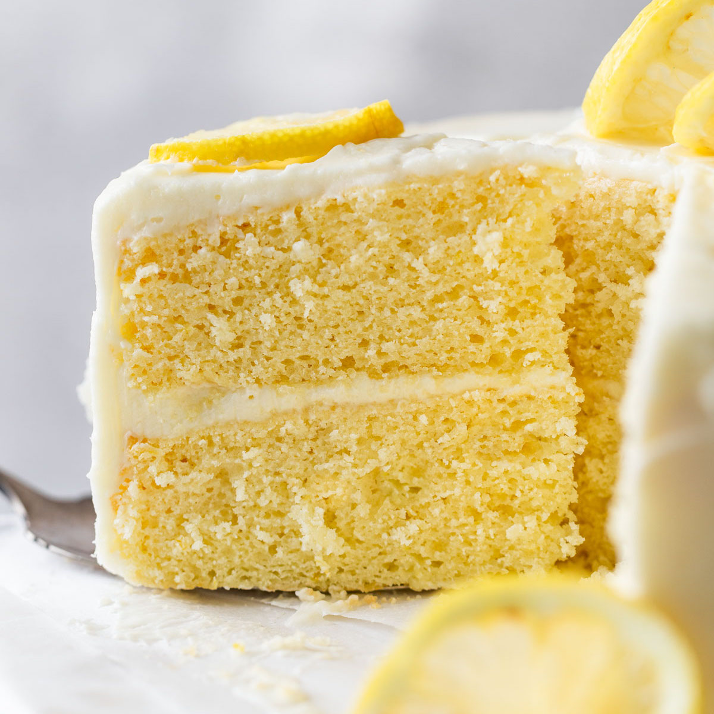

Lemon Cake with Lemon Filling and Lemon Butter Frosting
This is a wonderful Easter cake. Everyone at my Easter barbeque loved it. Very moist and delightful.

This is a great cake. The only adjustments I would make is to the frosting. I added yellow coloring to the icing. I would increase the frosting to allow for extra to pipe onto the cake to decorate it. A "crumb layer" is helpful when frosting this cake. Frost the cake very lightly and pay no attention to all the crumbs that will fall off the cake and mingle in the frosting. Refrigerate the cake for about a half an hour to let the icing firm up and then remove the cake and finish frosting the cake.....this way the crumbs stay in the first layer and will not ruin the look of the finished cake.
Ingredients
- 2 cups all-purpose flour
- 2 teaspoons baking powder
- 1 teaspoon salt
- ½ cup butter
- 1 ¼ cups white sugar
- 3 eggs
- 1 teaspoon vanilla extract
- 1 cup milk
Step-By-Step How to Make Lemon Cake
- Preheat oven to 350 degrees F (175 degrees C). Grease and flour two 8 inch round pans. Mix together the flour, baking powder and salt. Set aside.
- In a large bowl, cream together the butter and sugar until light and fluffy, about 5 minutes. Beat in the eggs one at a time, then stir in the vanilla. Beat in the flour mixture alternately with the milk, mixing just until incorporated.
- Pour batter into prepared pans. Bake in the preheated oven for 30 minutes, or until a toothpick inserted into the center of the cake comes out clean. Allow to cool in pans on wire racks for 10 minutes. Then invert onto wire racks to cool completely.
- To make filling: In medium saucepan, mix together 1 tablespoon lemon zest, 1/2 cup lemon juice and 1 tablespoon cornstarch until smooth. Mix in 6 tablespoons butter and 3/4 cup sugar, and bring mixture to boil over medium heat. Boil for one minute, stirring constantly. In small bowl, with a wire whisk, beat egg yolks until smooth. Whisk in a small amount of the hot lemon mixture. Pour the egg mixture into the sauce pan, beating the hot lemon mixture rapidly. Reduce heat to low; cook, stirring constantly, 5 minutes, or until thick (not to boil).
- Pour mixture into medium bowl. Press plastic wrap onto surface to keep skin from forming as it cools. Cool to room temperature. Refrigerate 3 hours.
- To make frosting: In large bowl, beat confectioners' sugar, 1/2 cup butter, 2 tablespoons lemon juice and 1 teaspoon lemon zest until smooth. Beat in milk, and increase speed and continue to beat until light and fluffy.
- To assemble: With long serrated knife, split each cake layer in half horizontally, making 4 layers. Place 1 layer, cut side up, on a serving plate. Spread with half of the lemon filling. Top with another layer, and spread with 1/2 cup frosting. Add third layer, and spread with remaining half of the lemon filling. Press on final cake layer, and frost top and sides of cake with remaining frosting. Refrigerate cake until serving time.